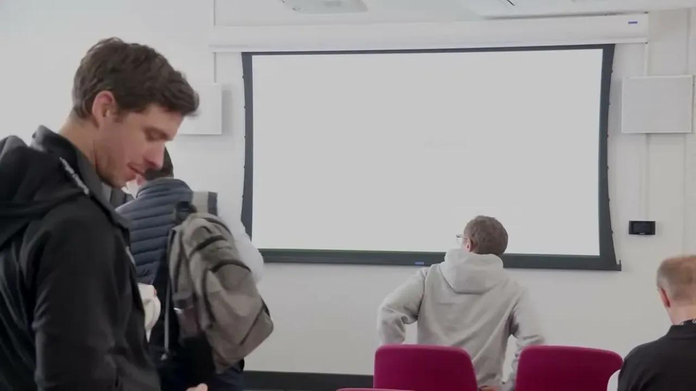
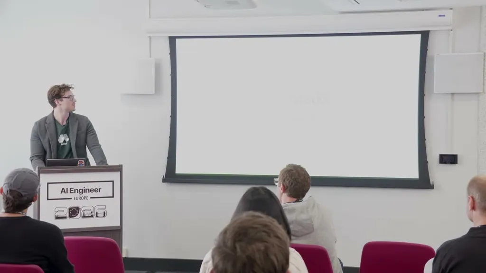
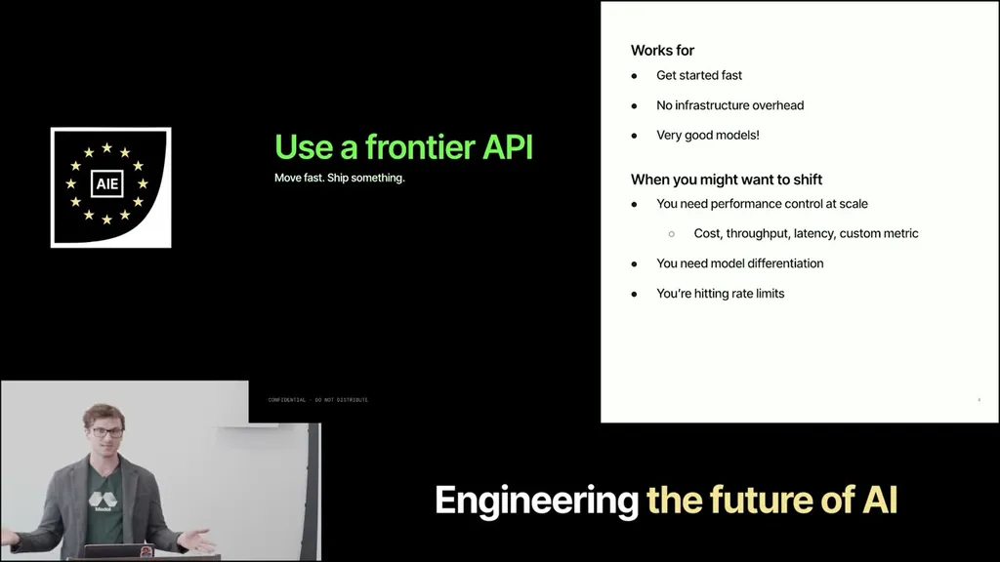
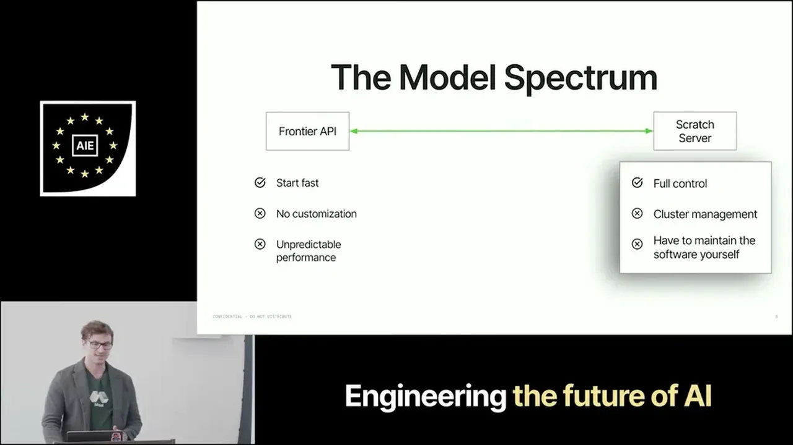
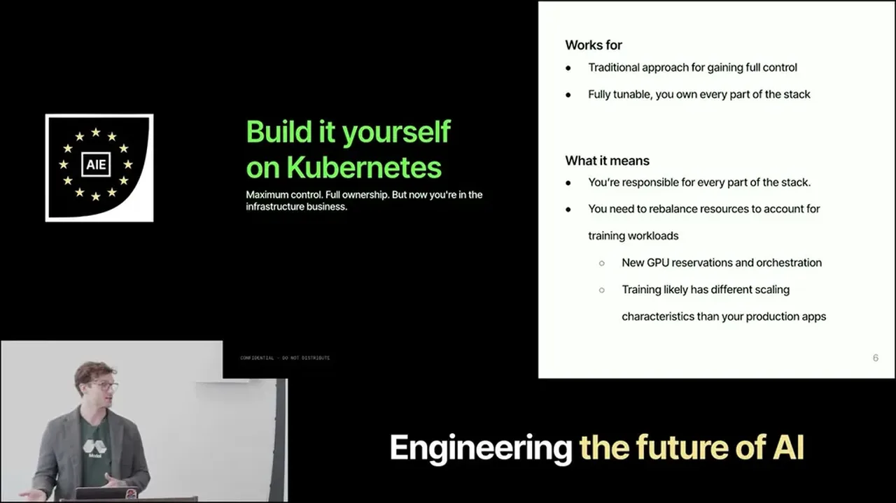
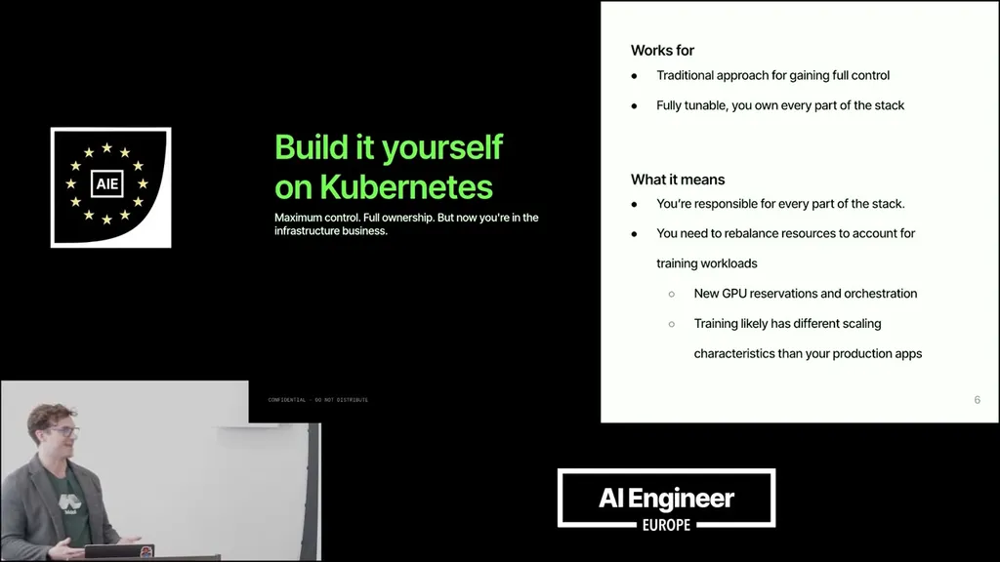
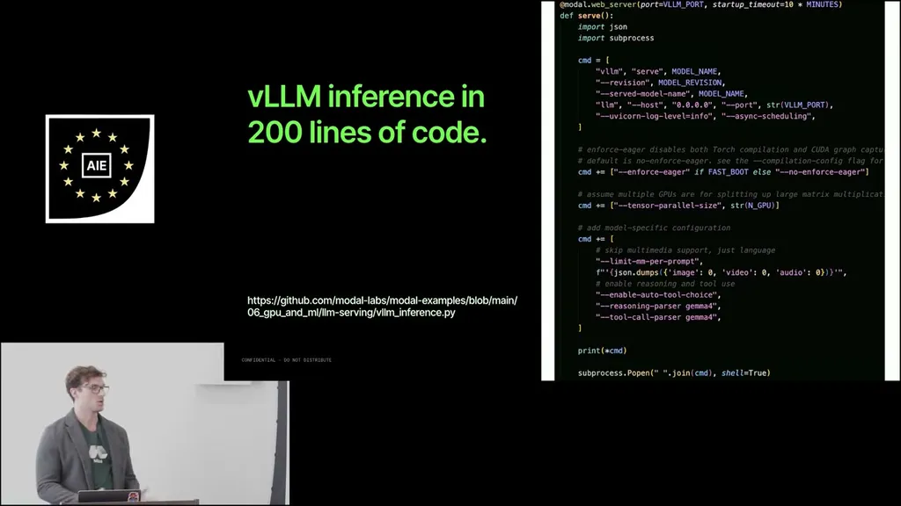
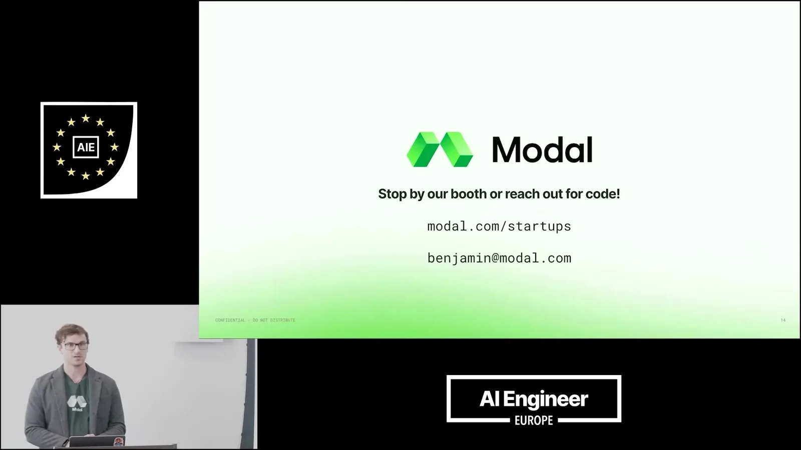
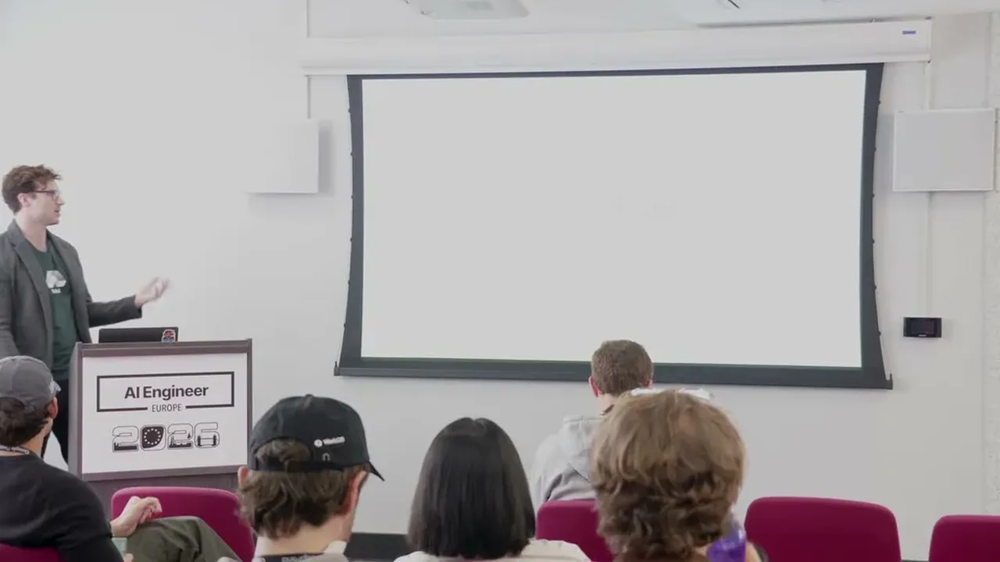

Gives concrete signals for deciding when a product should move from a frontier API to fine-tuning or RL-trained custom models, including named customer results (Intercom, Decagon) and the observation that plateauing evals plus rising API...
This reconstructs the talk's decision path from frontier API to a trained model as an argument rather than a literal system diagram; the specific edges are our inference from how the speaker sequenced the signals and outcomes (ours).
“as companies mature and their products mature and specialize, we're seeing more and more turn to fine-tuning to get in increased performance, better costs, and so forth”
said at 00:32“they're amazing. Um but uh you can't customize it at all uh beyond prompt engineering”
said at 02:07“Intercom is beating their frontier API at 1/5 the cost”
said at 04:10“don't have the exact same goal as you, right? They want their models to win on everything possible. And um we want our models to win at our business logic, right?”
said at 04:41“if you've uh moved to caveman mode and you're still paying more for your API than your customers are paying you, that might be a signal that your economics aren't scaling, right?”
said at 06:15“there's a decades-old adage in training that if you have garbage data, it's garbage in, garbage out. So if you haven't been collecting data and you don't have mature evals, it's probably not time to train”
said at 06:47“if you've built an agent harness, then you have what you need to have a new model, you know, learn through reinforcement learning how to provide your service”
said at 07:17“You can do supervised fine-tuning in 300 lines of Python”
said at 08:21“we have one of the most amazing things in the last quarter has been customer scaling up to 50,000, 100,000 sandboxes just to do RL”
said at 10:26“I'm not saying go train your model right now. I'm saying it's not something that is like, "Oh, I'll do that in 10 years." You might You might want to train your model in 1 year, right?”
said at 11:28The framing implicitly favors Modal's own serverless training/serving product, so the ease-of-fine-tuning claims (300 lines of Python, no infra team needed) are worth weighing against the fact that data curation and eval maturity -- the harder, non-infra part of the problem -- are treated as a precondition rather than something the platform solves (ours).









| Stance | Claim | t |
|---|---|---|
| asserts | As companies and products mature and specialize, more are turning to fine-tuning for better performance and cost than a frontier API. | 00:32 |
| asserts | Frontier APIs can't be customized beyond prompt engineering. | 02:07 |
| asserts | Intercom fine-tuned a model that beats their frontier API at one-fifth the cost. | 04:10 |
| asserts | Frontier labs optimize models to win on everything, while a company fine-tuning wants to win specifically at its own business logic. | 04:41 |
| recommends | If you've already resorted to prompt tricks like caveman mode and still pay more for the API than customers pay you, that signals your economics aren't scaling and fine-tuning may help. | 06:15 |
| warns | Without collected data and mature evals it's not yet time to train, per the garbage-in-garbage-out adage. | 06:47 |
| asserts | If you've built a product with evals and an agent harness, you likely already have what's needed to fine-tune or RL-train a custom model. | 07:17 |
| asserts | Open-source libraries now make supervised fine-tuning possible in about 300 lines of Python. | 08:21 |
| asserts | One Modal customer scaled RL training to 50,000-100,000 sandboxes for rollouts. | 10:26 |
| predicts | Teams shouldn't train immediately, but the decision point to train a custom model is likely closer than 10 years away, possibly within a year. | 11:28 |
Machine-readable copy embedded in this page (script#ontology) and in the corpus ontology.